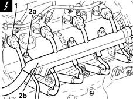
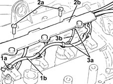
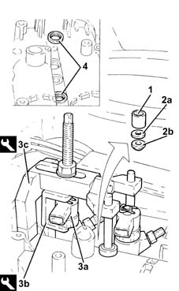
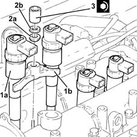
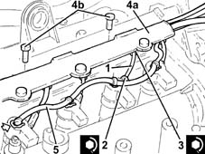

1060F10 fuel injectors
- Path
- Procedures > 10 ENGINE > 1060 DIESEL FUEL INJECTION > 1060F injectors and lines > 1060F10 fuel injectors
- Kind
- repair procedure (removal / refitting; the operation number is the code)
- Applies to
- engines: 1.3 JTD; all production periods
- Interactive page
- https://sloeber94.github.io/elrnDB-lYpsln/en/#/2429039
Applies to: engines: 1.3 JTD; all production periods
 Removing
Removing
 Refitting
RefittingEnsure that the ignition key is in OFF position, then disconnect the battery negative terminal (-).
 | Name | Connector |
|---|---|---|
- | Battery |
Proceed with removal 1060G22 cam angle sensor - r r .
1. Disconnect the electrical connections from the injectors.
| Name | Connector |
|---|---|---|
1 | Injector |
2. Undo the bolts (2a) and move the electrical wiring (2b) aside.

Applies to: engines: 1.3 JTD; all production periods
1. Push clips (1a) by hand and disconnect the pipe from the injectors to the fuel manifold (1b), injectors side.
2. Undo the bolts (2a) and move aside the pipe carrier channel (2b) as far as necessary.
3. Undo the connectors (3a) and remove the pipes from the fuel manifold to the fuel injectors (3b).

Applies to: engines: 1.3 JTD; all production periods
1. Undo the injector mounting bracket nut.
2. Remove the washer (2a) and tapered washer (2b).
3. Fit the injectors (3a), one at a time, using tools (3b) and (3c).
 | Name | Country |
|---|---|---|
3b | Extractor | 1.870.900.700 |
| Name | Country |
|---|---|---|
3c | Support | 1.970.739.000 |
Remove the fuel injectors complete with bracket.
Repeat the above procedure to remove the remaining pair of injectors.
4. Remove the fuel injector sealing rings from the upper head.

Applies to: engines: 1.3 JTD; all production periods
Refitting
RemovingRefit in their seatings the new fuel injector sealing rings on the top head.
1. Place the injectors (1a), complete with brackets (1b), in their seats.
2. Refit in their seatings the tapered washer (2a) and washer (2b).
3. atighten the nut fixing the injector mounting bracket to the recommended torque.
 | Fastening | Component | Ø | Value (daNm) |
|---|---|---|---|---|
3 | Nut | INJECTORS(DIESEL) | M8 | (Cylinder head side) 1.8 ÷ 2.2 |

Applies to: engines: 1.3 JTD; all production periods
1. Fit the new pipes from the fuel manifold to the injectors and secure them using the connectors without tightening them.
2. Tighten the connectors for the pipes from the fuel manifold to the injectors, injector side, to the recommended torque using a suitable spanner.
| Fastening | Component | Ø | Value (daNm) |
|---|---|---|---|---|
2 | Connector | FUEL MANIFOLD LINE TO INJECTORS | M12 | (Injector side) 2.3 ÷ 2.5 |
3. Tighten the connectors for the pipes between the fuel manifold and the injectors, fuel manifold side to the recommended torque using a suitable spanner.
| Fastening | Component | Ø | Value (daNm) |
|---|---|---|---|---|
3 | Connector | FUEL MANIFOLD LINE TO INJECTORS | M14 | (Fuel manifold side) 2.7 ÷ 2.9 |
4. Refit in its seating the pipe carrier channel (4a) and secure it with its bolts (4b).
5. Connect the pipe from the fuel injectors to the fuel manifold, fuel injectors side, pushing it until the clips can be heard clicking into place.

Applies to: engines: 1.3 JTD; all production periods
Place the electrical wiring back in its seating and fix it using the bolts.
Connect the electrical connections from the fuel injectors.
Proceed with refitting 1060G22 cam angle sensor - r r .
Connect the negative (-) battery terminal.